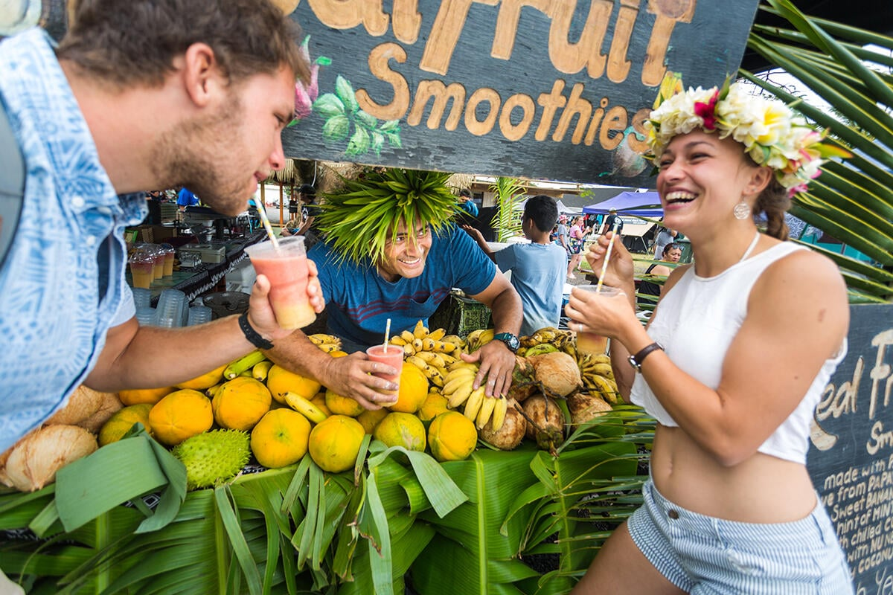
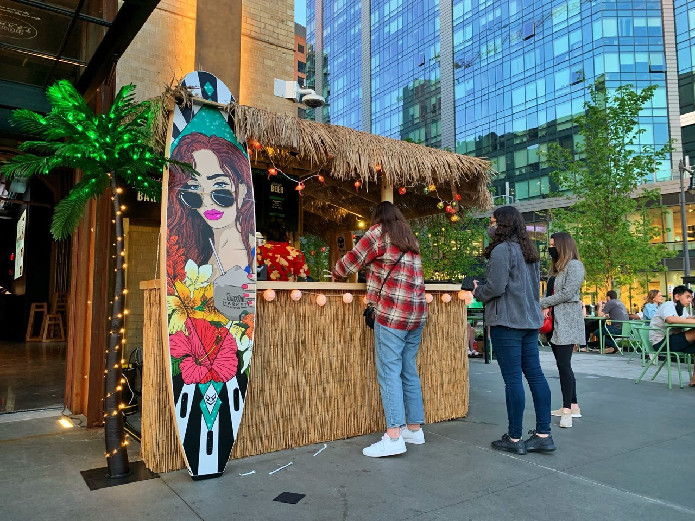
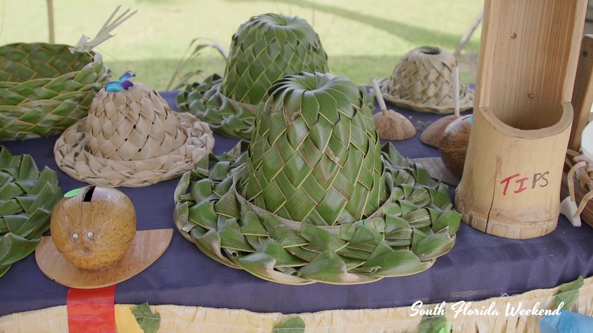
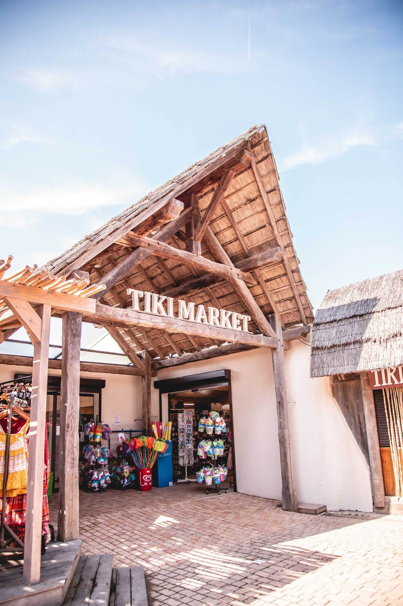
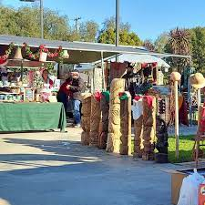
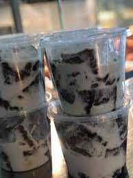
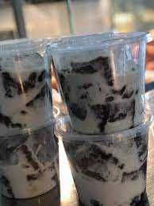

Tiki market is located in tiki city which is the only city in Lilo, they sell all sorts of foods but first I'll show you their desserts
     

The Ingredients for Banana Poke:
Lots of Banana,1 cup of milk, 2 cups water, 2 tablespoons granulated sugar,7 ounces thickend arrowroot,3 tablespoons sugar, 2 cups coconut milk.
The Ingredients for Suafa'i:
Lots of Bananas, 4 cups of water, 1/2 cup tapioca, 1 cup coconut milk, loads of Sugar.
The Ingredients for Panikeke:
3 ½ cups all-purpose flour
1 ⅓ cups white sugar
2 teaspoons baking powder
1 ½ cups water
2 medium very ripe bananas, mashed
1 tablespoon vanilla extract
1 ½ cups vegetable oil for frying, or as needed
The Ingredients for Panipopo:
3 1/2 cups all-purpose flour
1/4 cup granulated sugar
1/4 cup dry milk powder
2 1/4 teaspoon instant yeast
3/4 cup lukewarm water
2 large eggs
4 tablespoons butter, softened
1 1/4 teaspoons salt
1 teaspoon vanilla extract
For the Coconut Sauce:
2 1/2 cups coconut milk, well shaken/stirred
1 cup granulated sugar
3 teaspoons cornstarch
1/4 tsp salt

Tip: Goes well with meat
Tip: Seagrapes go well with oka and taro
Lusipi the picture on the right is meat, onion and coconut cream wrapped and cooked in taro leaves


Sea king contains fresh shrimp, lobster, clams, crab, potatoes, corn and sausage, all boiled in a flavorful broth.
An impressive meal in one pot that’s perfect for feeding a crowd!
Fresh seafood never fails to delight, and when I’m really looking for a show stopping recipe I make bacon wrapped scallops,
garlic butter shrimp or this fantastic seafood boil.
Open : 3pm - Close : 10pm
Eat your heart out at Alea.
These guys know where it’s at when it comes to BBQ food. Slow-cooked,
wood-smoked and full of flavour is what you can expect from this restaurant.
They’ve got street style dishes like beef brisket, pork belly ribs,
smoked salmon and leg of lamb— all smoked in the pit with Pohutakawa.
Taking American-style grill and enhancing it with Lani freshness is the name of the game at Alea!
Open : 10am - Close : 10pm